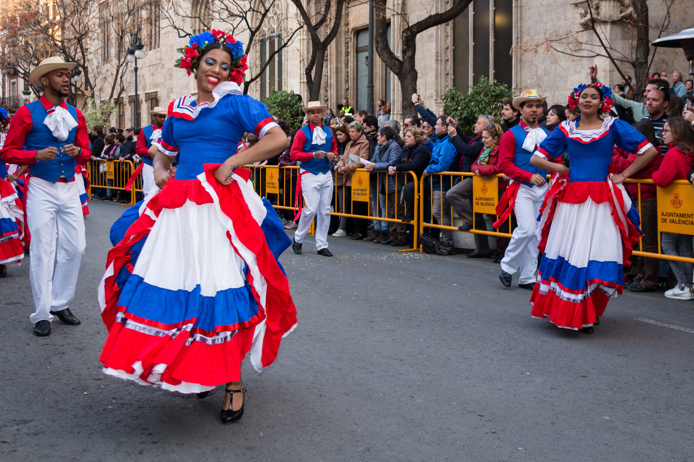
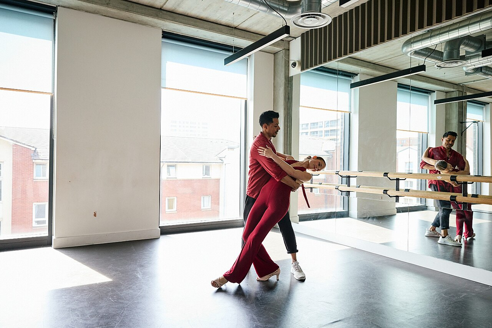
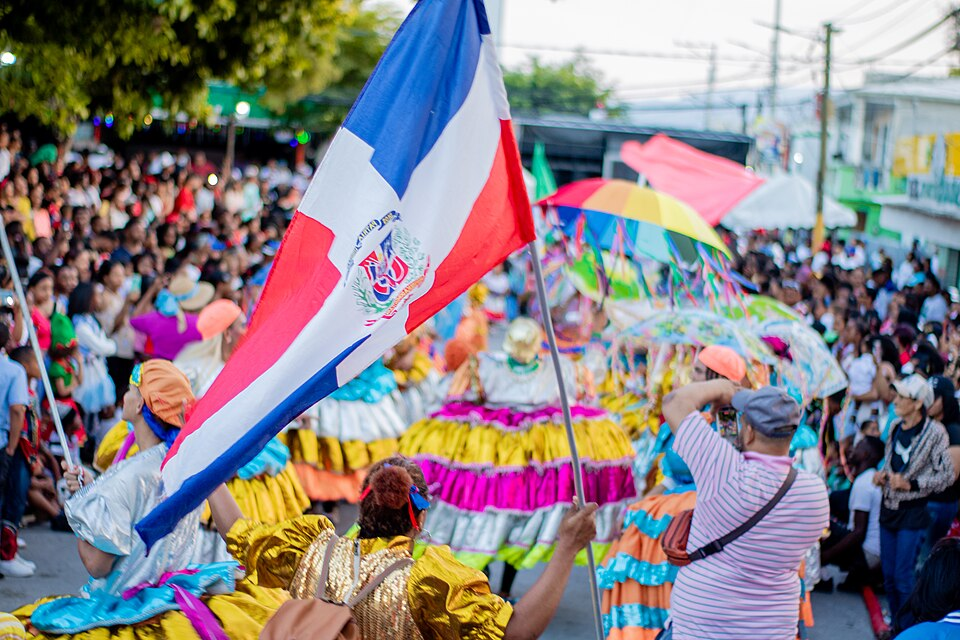
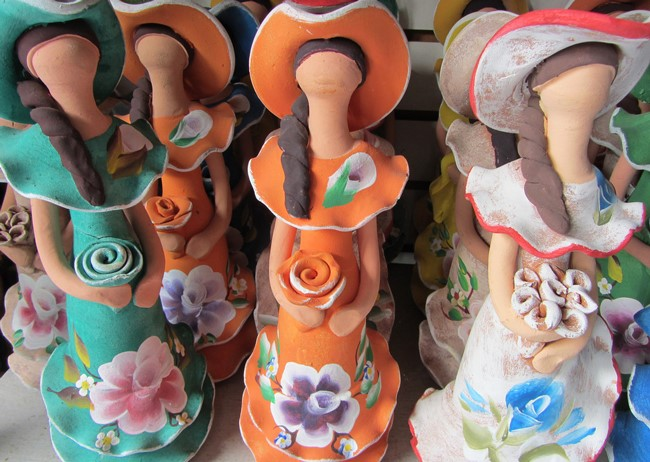
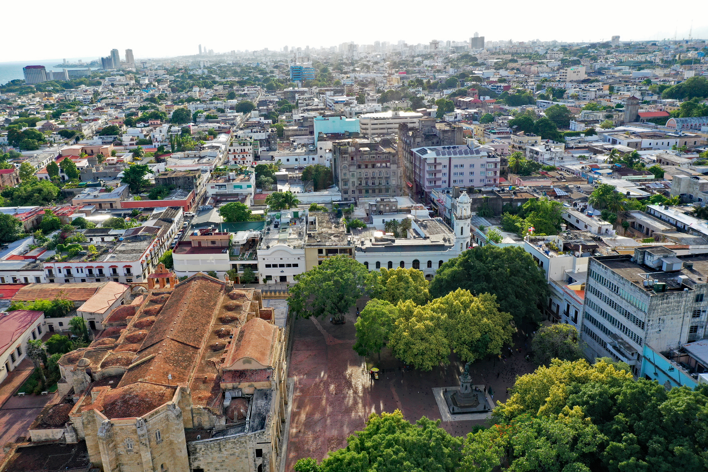
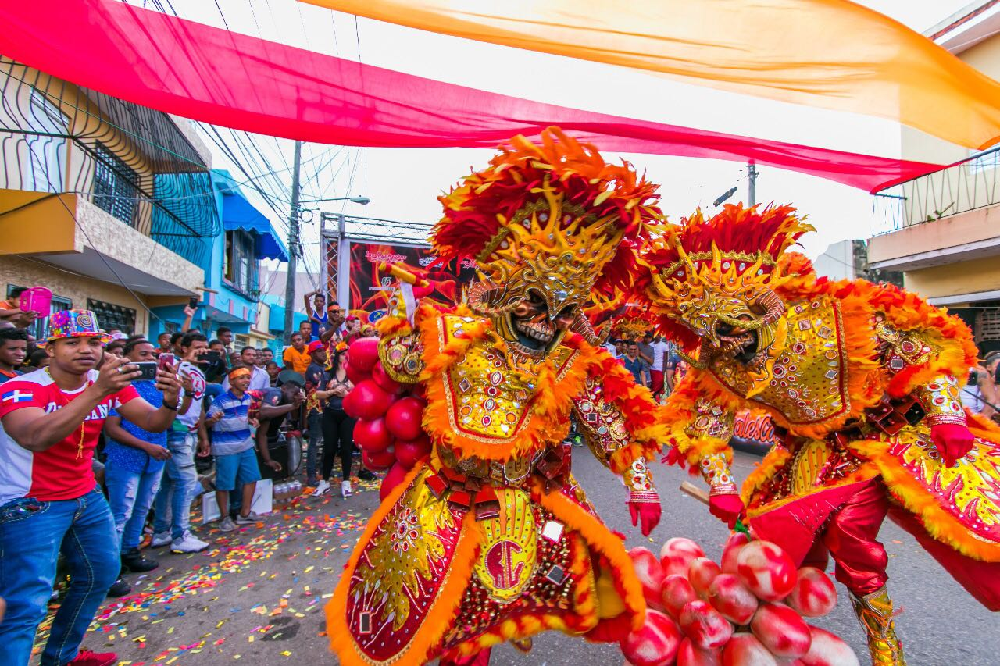
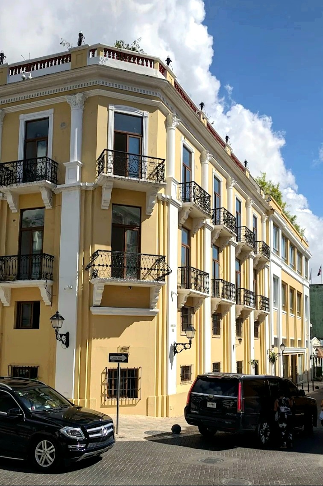

Merengue
Música, dança e identidade em um só ritmo. O merengue é um dos principais símbolos culturais dominicanos, marcado por melodias animadas e instrumentos como a güira, a tambora e o acordeão.
Um país de ritmos, raízes e tradições vivas.
A cultura dominicana nasceu do encontro entre heranças indígenas taínas, africanas e europeias. Ela está nos ritmos do merengue e da bachata, nas festas populares, nos sabores da culinária tradicional e no trabalho dos artesãos que preservam saberes de diferentes gerações.
Conhecer a República Dominicana também é aprender a sentir: uma música que convida a dançar, uma receita compartilhada em família e uma celebração nas ruas podem contar tanto quanto um grande monumento.
Expressões culturais
Manifestações e costumes que ajudam a compreender a identidade da República Dominicana.

Música, dança e identidade em um só ritmo. O merengue é um dos principais símbolos culturais dominicanos, marcado por melodias animadas e instrumentos como a güira, a tambora e o acordeão.

Romântica e envolvente, a bachata nasceu na República Dominicana e conquistou ouvintes em todo o mundo. Suas letras abordam o amor, a saudade e as experiências da vida cotidiana.

Máscaras expressivas, fantasias coloridas e desfiles transformam as ruas em espaços de celebração. Personagens tradicionais, como os diablos cojuelos, fazem parte dessa manifestação popular.

Máscaras carnavalescas, pinturas, peças de cerâmica e trabalhos em madeira revelam a criatividade dos artistas locais. O âmbar e o larimar, uma pedra azul encontrada na República Dominicana, também se destacam no artesanato e na joalheria.
Patrimônio histórico
Monumentos, cidades e construções preservam capítulos importantes da história dominicana.

Arquitetura e memória
Ruas de pedra, edifícios históricos e monumentos revelam a presença espanhola e a formação da cidade, fundada no início do período colonial europeu nas Américas.

Paisagem cultural
Da música tocada nas praças às festas que movimentam as comunidades, a cultura dominicana continua presente no cotidiano, conectando histórias antigas às novas gerações.
“A cultura vive nos ritmos que dançamos, nas histórias que contamos e nas tradições que compartilhamos.”

Viva o destino
Algumas formas de conhecer a República Dominicana para além das praias paradisíacas.
Conheça os ritmos dominicanos em apresentações musicais ou eventos locais e descubra como a dança faz parte da vida cotidiana.
Caminhe pelas ruas históricas de Santo Domingo, visite monumentos e observe os detalhes arquitetônicos que contam parte da história do país.
Descubra as máscaras, os personagens e as celebrações carnavalescas que revelam a diversidade das tradições regionais.
Prove pratos tradicionais, visite mercados e conheça os ingredientes e sabores que fazem parte da mesa dominicana.
Continue explorando
Fotografias já disponíveis no projeto. Os arquivos foram preservados; a exibição aplica recorte visual com object-fit: cover.